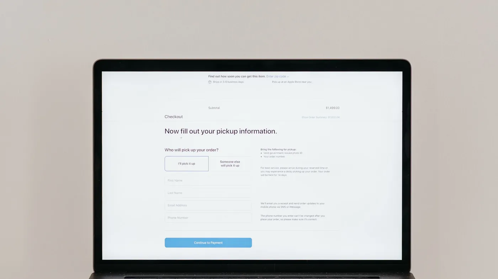

Samsung's new phones ship with an assistant that can book a hotel while its owner does something else. The next customer on your booking page may be software asking on someone's behalf.
At Galaxy Unpacked in London in July, Samsung introduced three new foldables: the Galaxy Z Fold8 Ultra, the Z Fold8 and the Z Flip8. Most of the announcement is the usual hardware story about thinner hinges, bigger batteries and better cameras.
The part a business owner should read is the software. Samsung describes the Fold8's assistant as agentic AI that can book a hotel while the user gets on with something else, and a feature called Now Nudge that opens the relevant apps side by side without being asked. Samsung is not the first phone maker to pitch this, and a launch demo is a long way from millions of people trusting their phone with a credit card. But the direction is plain. The thing filling in your booking form is starting to be software acting for a customer.
Your website, your chat and your booking flow were built for a person who reads, scrolls and fills gaps with common sense. An agent doing the same job needs straight answers: is there a room on the 14th, what does it cost all in, and can it be cancelled. When the cancellation terms sit in a PDF and the fees appear at the last step, a person grumbles and carries on. An agent may give up and book with a competitor whose answers were easier to read, and you never see that lost sale in any report.
The other failure is worse. The agent books something its owner did not quite want, because your page left room for a guess. Then the complaint lands at your front desk, not at Samsung's, and your staff are arguing over a booking that no human on either side actually read.
You do not need a second website for robots. You need one place that answers questions about your business correctly, whoever is asking. That is an agent grounded in your own policies and live availability, and it is the kind of thing CX-Builder builds.
Retrieval over the documents your staff already work from keeps policy answers current and quoted rather than paraphrased from memory. Tools that call your booking or inventory system give live answers on dates and prices instead of a link to a calendar. And a human-in-the-loop step sits in front of anything that commits money or changes a reservation, so a person approves the unusual cases and the real customer gets a confirmation before anything is final. A phone assistant and a person in chat get the same answer, from the same source, with the same checks.

It is one agentflow reachable two ways: the embedded chat widget for people on your site, and the flow's API endpoint for anything else that needs to ask. Your terms and policies go into a document store and are embedded into a vector store, so answers come from the current version. A custom tool calls your availability system. Then a structured output step returns each quote as fields (dates, total price, cancellation terms) instead of a paragraph, which is what lets a later check compare it against policy. Bookings above a value threshold or outside the rules wait at a human input node, and rate limits on the endpoint keep a misbehaving caller from flooding it.
None of that depends on what Samsung or anyone else ships next. It is the same work that makes your service clearer for people, done once.
Take your three most common customer requests, such as booking, changing and cancelling. For each one, ask whether someone could get a complete, correct answer without opening a PDF or calling you. Wherever the answer is no, a phone agent will fail there first, and that is the place to build first.